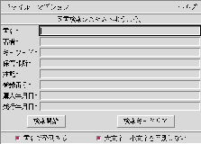

検索画面について

基本的には、書名〜発行年月日の各フィールドに検索キーワードを入れ、リター
ンキーを押すか、「検索開始」ボタンを押すだけです。不要なフィールドには
何も入れる必要がありません。もしもすべてのフィールドが未入力の場合は、
全件検索になり、ダイアログで注意を促されます。全件検索では数千件あるす
べてのデータが表示されるため、非常に時間がかかるし、メモリも食いますの
でご注意下さい。
下の方にある「書名で整列する」ボタンはスイッチになっていて、オンの状態では
「書名」検索結果をソートします。オフにすると、登録番号順に表示されます。
「大文字／小文字を区別しない」がオンの状態では、アルファベットの大文字
と小文字が検索時には同じものとみなされます。いわゆる全角のアルファベッ
トは区別されますので、ご注意下さい。
検索キーについて
複数の検索フィールドに検索キーワードを入れると、各フィールドの AND 条
件で検索を行ないます。
- 書名、著者、キーワード、保管部所、注記
- これらのフィールドは「文字型」のフィールドです。普通に文字を入
力すると、それらを含むデータが検索の対象になります。複数の文字列を空白で区切ると、それらの文字列を含むデータの OR 条件で検索します。たとえば、"abc def"は、"abc" または、"def" を含むデータがすべて検索対象になります。
正規表現」も利用可能です。egrep で使える正規表現はすべて利用可能です。
したがって、"+" などは特殊文字の扱いになるので、特殊文字自体を検索デー
タにしたい場合は、"\"（バックスラッシュ）で "\+" の用にエスケープして
下さい。
- 登録番号
- 登録番号は「数字型」のフィールドです。"100" と入力すると、登録番号100 番のデータ検索されます。"100 101" では、登録番号 100 番と 101 番が指定されます。
範囲指定も可能で、以下のような表現があります。
"<100"（100より小さい)
">100"（100より大きい)
"100-200"（100以上、200以下)
前に述べたように、登録番号 100,001 以上は社有図書ではなく、一般
図書なので、検索条件に ">100000" とすることによって、一般図
書のみ検索することができます。逆に "<100000" は社有図書のみ
を検索対象とします。
- 購入年月日、発行年月日
- 年月日は、年(4桁)/月(1-2桁)/日(1-2桁)で表現します。たとえば、
1995/9/1、1995/09/01 などです。また、登録番号と同様な範囲指定が可能です。たとえば、
"<1995/9/1"（1995年9月1日より前)
">1995/9/1"（1995年9月1日より後)
"1995/9/1-1995/10/1"（1995年9月1日から1995年10月1日まで)
以上の要領で検索キーを入力し、「検索開始」ボタンをクリックすると、しば
らくして検索結果が表示されます。
[インデックスへ戻る]